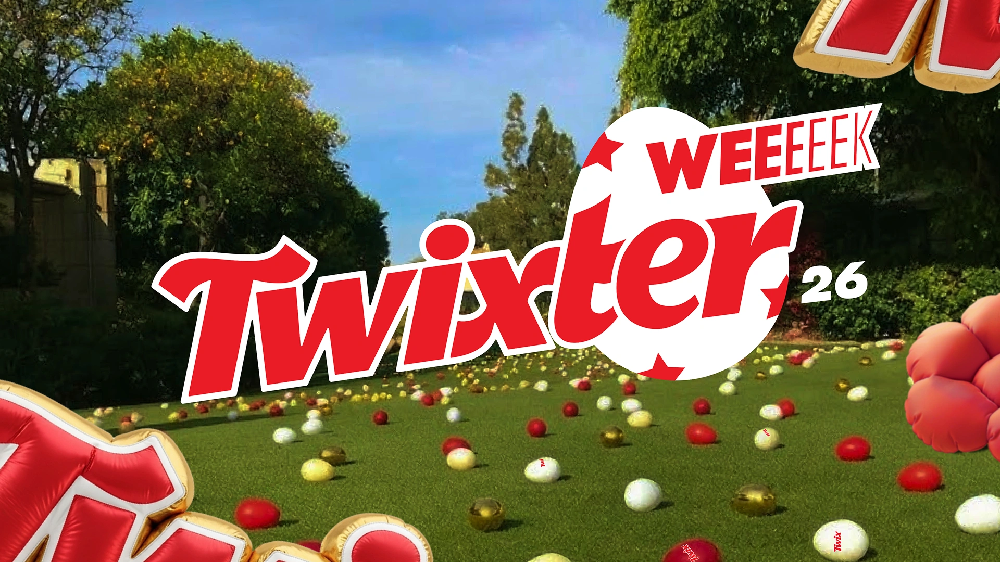
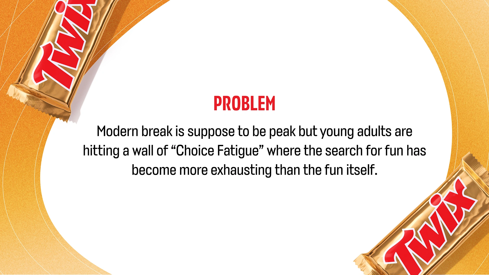
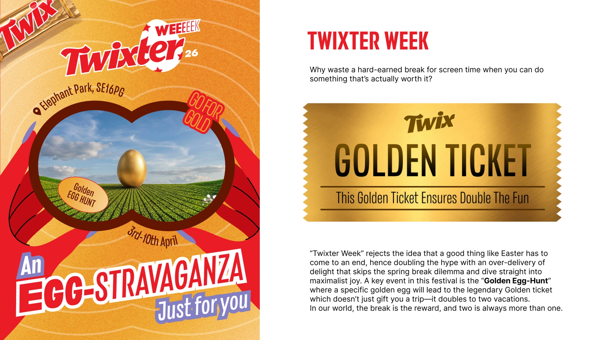
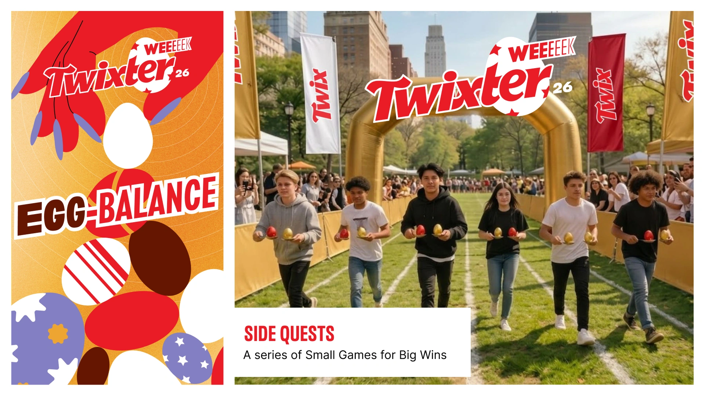
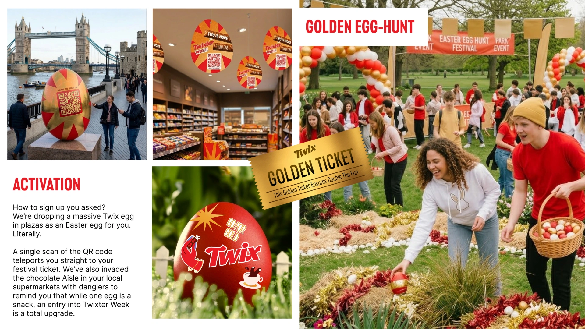
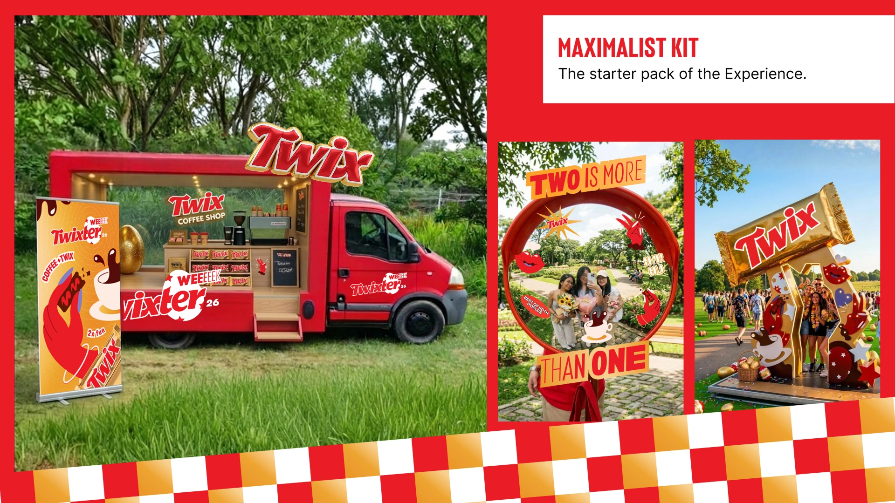
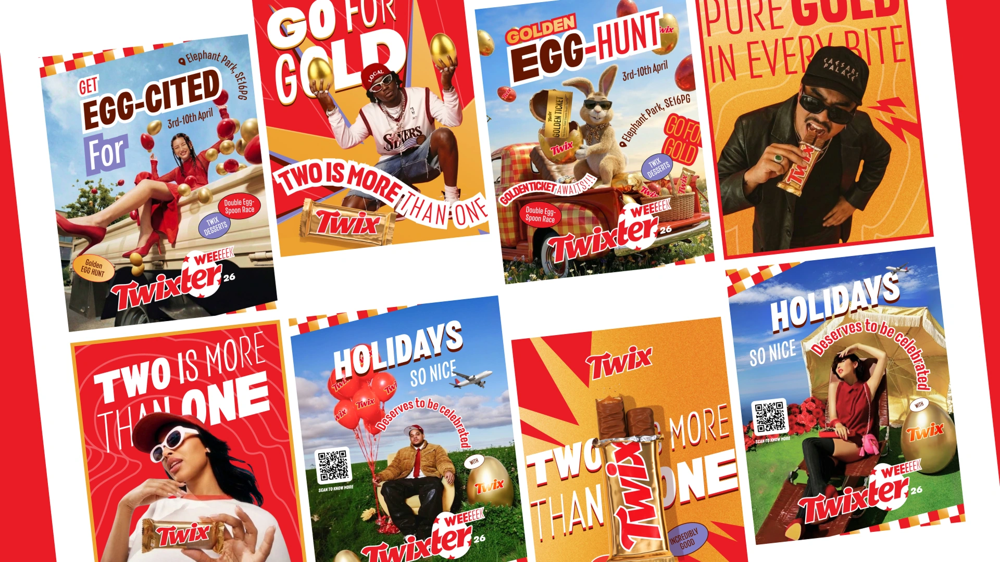
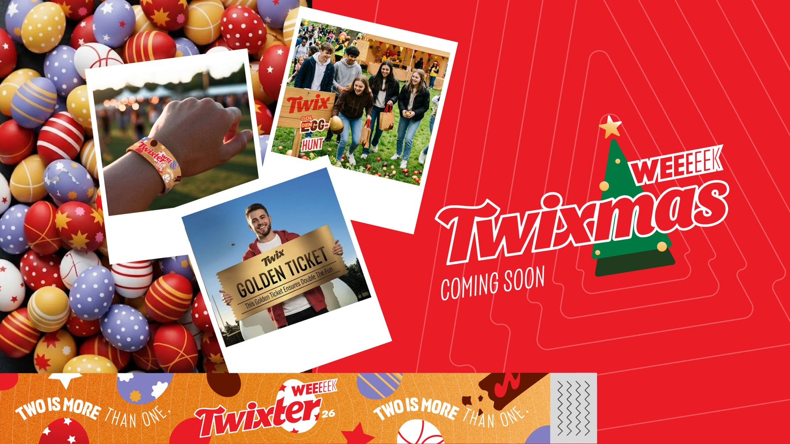

Young adults finally get time off, then lose it scrolling for something worth doing.
Finding the fun has become more tiring than the fun itself.
Twixter Week: a Golden Egg-Hunt where one ticket doubles into two holidays.
A maximalist festival kit, from giant Twix eggs in city plazas to aisle danglers.

Young adults finally get time off, then lose it scrolling for something worth doing. Finding the fun has become more tiring than the fun itself.

Why stop Easter at one day? Twix stretches it into a week, because two is always better than one.
The centrepiece is the Golden Egg-Hunt. Find the right egg and win the Golden Ticket: one trip that doubles into two holidays.
Here, the break isn’t the reward. It’s the prize.

Egg-balancing, races and quick-fire games across the park. Small wins that keep the week buzzing.

Giant Twix eggs land in city plazas. One QR scan and you’re in the festival.
In the chocolate aisle, danglers make the point: one egg is a snack. Twixter Week is the upgrade.

Coffee truck, photo frames, giant bars. Everything a pop-up needs to turn the volume up.

